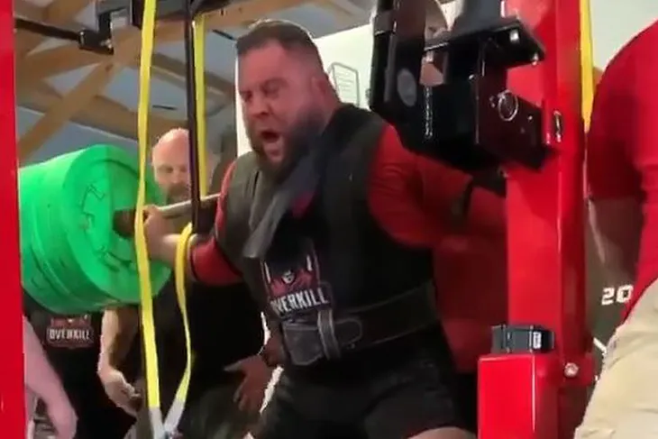

Rekordy
Brian Carroll
Carroll rekord świata ustanowił podczas zawodów Gene Rychlak Jr. Pro Invitational 2020 w Tennessee (południowy stan w Stanach Zjednoczonych). Przy ogłuszającym dopingu trójboista podszedł do sztangi ważącej aż 592,3 kg!
Nie było łatwo, ale wykonał jeden przysiad i poprawił rekord globu o 12,3 kg. Poprzedni najlepszy wynik na świecie należał do Nathana Baptisty, który przysiadł ze sztangą ważącą 580 kg.
Julius Maddox
Maddox nieustannie podnosi sobie poprzeczkę, choć już dawno zdystansował rywali w tej popularnej konkurencji trójboju siłowego. Poprzedni rekord wszech czasów w wyciskaniu na ławeczce bez koszuli wspomagającej także należał do niego – na zawodach z cyklu Arnold Sports Festival zaliczył udaną próbę ze sztangą o masie 350 kg (770 funtów). Poprawił się jeszcze o blisko 5 kilogramów, ale – jak zapowiada 33-letni siłacz – to tylko kolejny etap na drodze do złamania niewyobrażalnej bariery 800 funtów (363 kg).
Nowy rekord zawodnik o dość nietypowym pseudonimie „Irregular Strength” (z ang. „Nieregularna Siła”) ustanowił podczas lutowych zawodów Hybrid Showdown w Miami na Florydzie. W pierwszym podejściu bez trudu wycisnął 330 kg, a potem rozprawił się z rekordowym ciężarem 355 kg (782,6 lbs).
Hafthor Bjornsson
Hafthor Bjornsson ustanowił oficjalny rekord świata w martwym ciągu. Islandczyk, podczas próby bicia rekordu, która z powodu pandemii koronawirusa odbyła się w kameralnym gronie w Islandii, dźwignął 501 kilogramów. To najwięcej w historii sportu.
"Brak mi słów. Co za wspaniały dzień. Zapamiętam go do końca życia. Zapowiadałem, że dokonam tego, a kiedy już decyduję się na coś, to jestem uparty jak osioł. Chciałbym podziękować mojej rodzinie, przyjaciołom, trenerom, fanom, sponsorom i… hejterom, którzy też pomogli w całym przedsięwzięciu — napisał Bjornsson w komentarzu do wideo na Instagramie.
Dotychczasowy rekord w martwym ciągu należał do Eddiego Halla. W 2016 r. podczas mistrzostw Europy strongmanów Brytyjczyk podniósł równe 500 kg.
31-letni Bjornsson potwierdził, że jest jednym z najsilniejszych strongmanów na świecie. Multimedalista mistrzostw Europy i świata zasłynął w 2018 r., kiedy w tym samym roku kalendarzowym zwyciężył 2018 World's Strongest Man, 2018 Arnold Strongman Classic oraz 2018 Europe's Strongest Man.